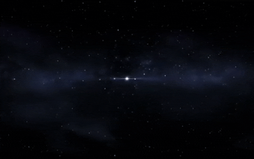
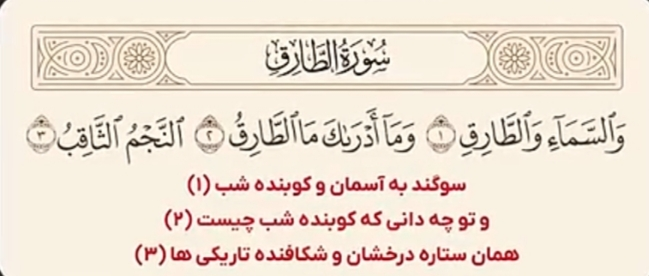

جواب
در سال 1967 جاسلین بل برنل دانشمند و اخترفیزیکدان بریتانیایی
هنگام استفاده از یک رادیو تلسکوپ بزرگ متوجه سیگنال عجیب و منظم شد که به طور مکرر در فواصل زمانی دقیق دریافت شد

سیگنال دریافتی از این رادیو تلسکوپ شبیه به صدای کوبیدن در به نظر می رسید. تا آن زمان هیچ جرم طبیعی شناخته شدهای در فضا وجود نداشت که چنین الگویی از امواج رادیویی منتشر کند.
و در سال 1974 آنتونی هویش اخترفیزیکدان انگلیسی
کشف کرد که این سیگنالها از یک ستاره نوترونی سرچشمه میگیرند که با سرعت بسیار بالایی میچرخد.
این ستاره شبیه به یک فانوس چشمک زن عمل میکند و پرتوهایی از انرژی رادیویی به صورت منظم در فضا پخش میکند. به دلیل این کشف، او موفق به دریافت جایزه نوبل شد.
این نوع ستارهها پولسار نام گرفتند که به معنای ستاره تپنده است. شگفتانگیزتر اینکه خداوند ۱۴۰۰ سال قبل در قرآن از ستارهای به نام طارق سخن گفته است.
خداوند این ستاره را طارق نامیده و آن را نوری شکافنده توصیف کرده است. طارق در زبان عربی به معنای «کوبنده» یا کسی است که در هنگام شب میکوبد.
صدای ضبطشده این ستاره پولسار، که دانشمندان در قرن ۲۱ با فناوریهای پیشرفته موفق به ضبط آن شدهاند:
به وضوح مشخص است که این صدا شبیه صدای ضربه زدن یا کوبیدن مداوم است، انگار کسی به در میکوبد. سوال اینجاست که چگونه ممکن است قرآنی که ۱۴ قرن پیش نازل شده، چنین توصیف دقیقی از پدیدهای داشته باشد که تنها با ابزارهای علمی پیشرفته امروزی قابل شناسایی است؟ آیا این موضوع انسان را به تامل وامیدارد؟